# Ovidentia - Admin Panel - Upload File
This software is so old that it's a massive pain to use.
## Upload File - Example from OSCP 10.11.1.73 - Gamma
Left hand side pane >
File ManagerTry to add a file, you get "the directory name contains characters not supported by the file system"
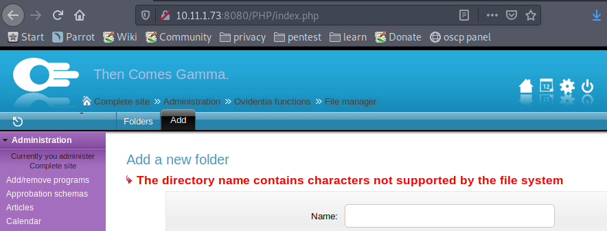Go to
Sites >
Ovidentia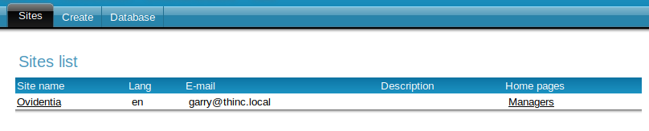Select
File upload configuration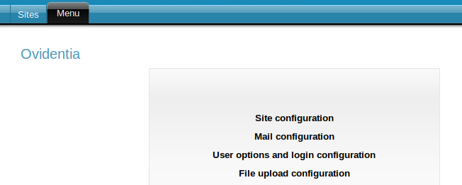Change the upload path.
The existing path most likely isn't writable, which is most likely why you can't add a folder.
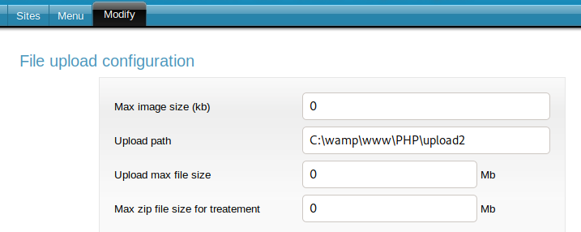You can now add folders in the
File Manager.
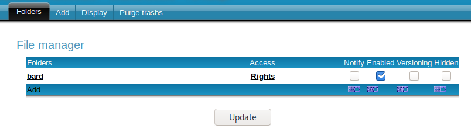Click on
Rights and give yourself the access/rights you want.
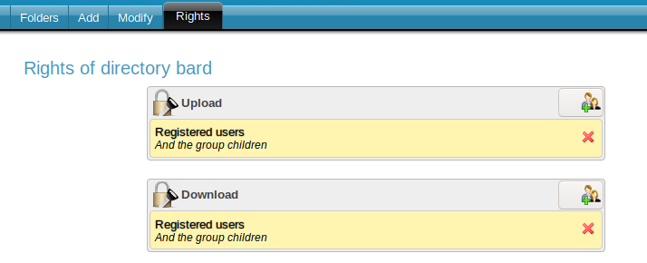You should now see a
File Manager option on the right hand side green pane, and at the top amongst the icons.
Click on either.
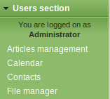Select your folder.
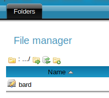Select
Upload on the top tab and upload a file :)
I uploaded a windows PHP reverse shell -
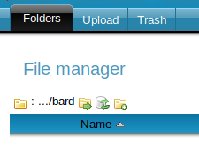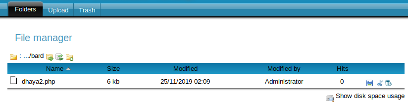Your uploaded folder and file should be here (change
upload2 to whatever you set the
Upload path to in the
File upload configuration)
http://10.11.1.73:8080/PHP/upload2/fileManager/collectives/For me, my file was in
http://10.11.1.73:8080/PHP/upload2/fileManager/collectives/DG0/bard/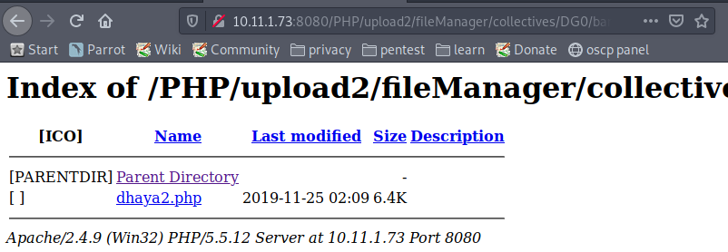~~~~~~~~~~~~~~~~~~~~~~~~~~~~~~~~~
Can't find uploaded file?
To find the path of where you file has been uploaded to, you can cause an error.
Go back to
Sites >
Ovidentia >
File upload configuration and change the upload path to something else.
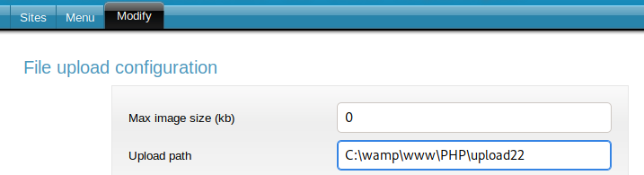Return to
File manager >
<your folder> and you'll see an error.
This error tells you where your file has been uploaded to.
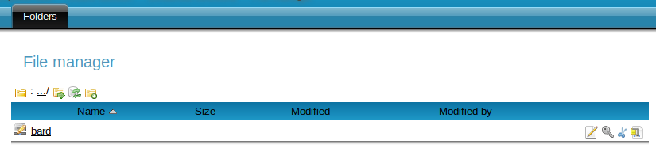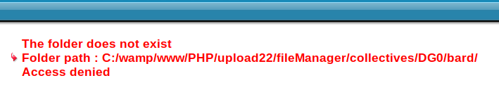Make sure to go back to
Sites >
Ovidentia >
File upload configuration and change the
Upload path back once you know where your files are.